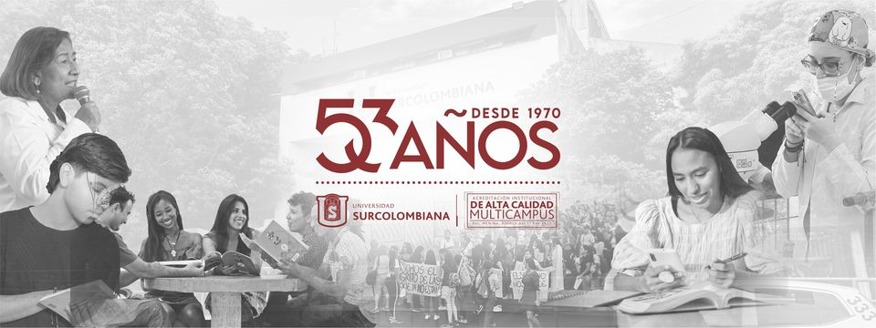
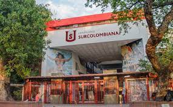
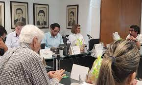
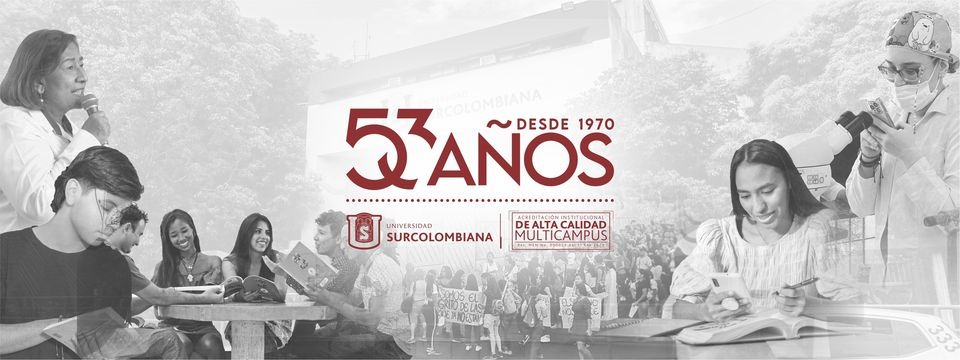
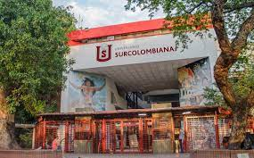

REDES SOCIALES
¡Puedes encontrar aquí la página de la universidad!
.png)
¡Puedes encontrar aquí el facebook de la universidad!
¡Puedes encontrar aquí el instagram de la universidad!
El 17 de diciembre de 1968, mediante la Ley 55 se crea el Instituto Técnico Universitario Surcolombiano, ITUSCO, con la misión de preparar y calificar los profesionales que requerían la región y el conocimiento de su realidad concreta. Inició labores académicas el 30 de marzo de 1970, con tres programas de Tecnología, en Administración de Empresas, en Administración Educativa y en Contaduría Pública, con 305 alumnos y cuatro profesores de tiempo completo. Mediante la Ley 13 de 1976 se transformó el ITUSCO en Universidad Surcolombiana, con estructura similar a la de la Universidad Nacional de Colombia, excepto en la conformación del Consejo Superior; en consecuencia, limitó la competencia de la Universidad al ofrecimiento sólo de programas académicos establecidos por la Universidad Nacional. La Universidad Surcolombiana nunca atendió este mandato legal y creó otros programas que luego oficializó ante el ICFES. Vale decir que durante la primera década de existencia, varios programas nacieron sin tener un norte específico y sin el aval de la Universidad Nacional. Sólo en el transcurso de su desarrollo se fueron creando las facultades y oficializando los programas a nivel profesional ante el ICFES.
Facultad de la institución y de sus miembros de determinar las políticas, acciones y metas para cumplir su misión, visión, y sus proyectos de vida.
Ejercicio del poder que reconoce y garantiza las libertades individuales, la igualdad en derechos y oportunidades y las diferencias multiculturales; por ello la universidad promoverá la participación deliberativa de sus integrantes para la toma de decisiones.
Reconoce la importancia de las condiciones que hacen posible la apropiación transferencia, transformación y producción del conocimiento perteneciente a las distintas culturas; más que exclusiones entre conocimientos científicos y ancestrales se propiciará entre ellos diálogos y encuentros.
Privilegia una ética cívica de valores básicos compartidos para convivir en el respeto por las otras éticas comprehensivas. Valores que se orientan a lograr unos mínimos básicos de justicia social, respeto entre semejantes, tolerancia, igualdad de oportunidades ante la ley, solidaridad y aceptación de un trato diferencial en beneficio de los más necesitados o desprotegidos.
Reconocimiento de la diferencia u otredad, como derecho a participar en los procesos formativos sin distingo de color, raza, credo, etnia, género, condición socioeconómica, ideología y limitación física. Se orienta a la negación de cualquier forma de discriminación.
Concibe el desarrollo como el conjunto de acciones que propenden por el mejoramiento de las condiciones de vida y bienestar de las actuales y futuras generaciones, de tal manera que se conserven la estructura y funcionamiento fundamentales de los ecosistemas, en especial de aquellos considerados estratégicos para mantener dichas condiciones y la biodiversidad.
Consejo Superior Garantizar la coherencia, pertinencia, calidad y efectividad del proyecto institucional. Comisión Universitaria de Carrera Administrativa Especial En relación con las convocatorias y concursos: Establecer de acuerdo con este estatuto, los lineamientos generales con que se desarrollarán los procesos de selección para la provisión de empleos de carrera administrativa de la Universidad Surcolombiana. Revisar los proyectos de convocatoria para los concursos de méritos de personal administrativo de carrera, que requiera la institución, a fin de garantizar que respondan a los requerimientos legales y a los parámetros técnicos según la naturaleza empleo. Adelantar acciones de verificación y control al proceso de convocatoria para proveer cargos de Carrera Administrativa, con el fin de observar su cumplimiento al principio de mérito; y, dado el caso, suspender el respectivo proceso, mediante resolución motivada; Revocar los procesos de selección cuando se compruebe la ocurrencia de irregularidades, siempre y cuando no se hayan producido actos administrativos de contenido particular y concreto relacionados con los derechos de carrera. Resolver, las reclamaciones o recursos que presenten los concursantes, cuando no se encuentren conformes con el trámite de los concursos o con los resultados obtenidos en el mismo. Conocer, de oficio o a petición de parte, de las irregularidades que se presenten en la realización de los procesos de selección y si se comprueba que un nombramiento se efectuó con violación de las normas que regulan la materia, informarlo al nominador para que este proceda de inmediato a revocar el nombramiento. Aprobar el acta correspondiente a cada concurso, en la cual se indicarán los resultados, la lista de elegibles o eventualmente la declaratoria de desierta. Con base en dicha acta, el Rector adoptará las decisiones correspondientes. En cuanto al registro de carrera administrativa de la Universidad Surcolombiana: Crear, organizar y mantener el registro de Carrera Administrativa de la Universidad Surcolombiana. Expedir las certificaciones al personal que ostenta derechos de carrera administrativa, correspondientes a la inscripción, actualización, ascenso, promoción o novedad en el registro de Carrera Administrativa de la Universidad. Conocer de las reclamaciones sobre inscripciones en el Registro de Empleados Públicos, de los empleados de carrera administrativa a quienes se les aplica el presente Estatuto. En razón a la carrera administrativa: Ser segunda instancia de las decisiones que adopte la Comisión de Personal Administrativo en cuanto a las quejas, reclamos, sugerencias y peticiones, presentadas a través de los medios autorizados por la Ley y, en virtud de ellas u oficiosamente, realizar las actuaciones que estime necesarias con el fin de resolverlas observando los principios de celeridad, eficacia, economía e imparcialidad. Las demás consignadas en el Estatuto de Personal Administrativo de la Universidad Surcolombiana.
¡Puedes seguir conociendo más de las funciones del consejo superior y otras dependencias aquí!
¡Puedes encontrar aquí la página de la universidad!
¡Puedes encontrar aquí el facebook de la universidad!
¡Puedes encontrar aquí el instagram de la universidad!
